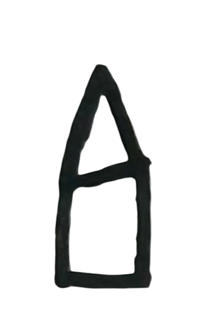

magazine made by

As a freshman in college, I felt a gap between the work I was doing and the amount of art I was creating. I was under the impression that as a Computing in the Arts major there would be a heavy emphasis on art, but I found there to be more of an emphasis on technology. I took matters into my own hands and started INSCAPE Magazine, which launched my Sophomore year. INSCAPE started as a personal project and a way for me to share art made by myself and other Charleston artists through a digital magazine. This project is so special to me as I became my own creative director and got to work with friends to make a product for an audience to enjoy. I quickly realized the potential of INSCAPE and invested my time and energy into creating more Volumes, each with a different theme. Some volumes raised money for charities, and I even got sponsored to print Volume Five! You can find the INSCAPE website by clicking the button below - I coded that site too!
Visit the INSCAPE Website